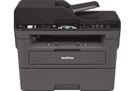

Definición
Una impresora multifunción o impresora multifuncional es un periférico o dispositivo que puede conectarse a la computadora y que posee las siguientes funciones dentro de un mismo y único bloque físico: impresora, escáner, fotocopiadora, ampliando o reduciendo el original.
Además, dependiendo del modelo, puede disponer de las siguientes funciones adicionales:
Fax: aunque a veces el fax no esté incorporado, la impresora multifunción es capaz de controlarlo si se le conecta a un puerto USB.
Lector de tarjetas de memoria: para la impresión directa de fotografías de cámaras digitales o dispositivos móviles.
Disco duro: para almacenar documentos e imágenes (solo las unidades más grandes utilizadas en oficinas).
Un dispositivo multifunción (Multi Function Printer/Product/Peripheral, MFP) puede operar como: periférico de entrada/salida de computadora o de modo autónomo, sin necesidad que la computadora esté encendida. Así, las funciones de fotocopiadora y fax son autónomas, mientras el escaneado, generalmente no se puede llevar a cabo sin la conexión a la computadora, aunque sí se puede escanear directamente a una memoria flash, por ejemplo, a través del puerto USB.
Ventajas
Trabajo centralizado: Al integrar todas las funciones que necesitamos, no se requerirá de depender de servicios externos ni de la compra de otros equipos como copiadoras o escáner.
Ahorro de energía: Imagine estar trabajando con una impresora, una copiadora y un fax, los tres equipos individuales. En este caso el gasto de energía sería mucho más elevado que si únicamente utilizamos uno que incorpora a los otros dos. Además, también serán menores los costes de gestión y administración.
Mayor comodidad: Tener más funciones en un mismo dispositivo no sólo ahorrá tiempo, sino también resultará mucho más cómodo, especialmente si contamos con que a día de hoy lo normal es que se pueda imprimir en cualquier momento desde cualquier lugar gracias a la tecnología WiFi.
Desventajas
Las averías tienen mayor impacto. Ya que dependemos de un solo equipo para muchas funciones, si se estropea puede afectar en mayor medida a nuestro ritmo de trabajo.
Supone una inversión inicial mayor, ya que normalmente su precio es algo superior al de una impresora estándar de tinta o láser.
Las averías pueden ser más caras, algo comprensible si se tiene en cuenta la mayor complejidad de estos equipos.
EPSON COLORWORKS C7500

Impresora industrial para producir etiquetas a color en alta calidad de forma interna y bajo demanda para grandes tiradas ColorWorks C7500, dirigida a clientes que buscan impresiones duraderas y desean imprimir en papel mate, es lo último en impresión de tiradas cortas de etiquetas en color. Los fabricantes ahora pueden cubrir sus necesidades de etiquetado en sus propias instalaciones de forma fiable y rentable con una velocidad y una calidad excepcionales. El modelo C7500 también contribuye a eliminar los costes asociados con la preimpresión al producir tiradas cortas de etiquetas personalizadas bajo demanda.
Dispositivos relacionados

Impresora multifunción - Brother MFC-L2710DW